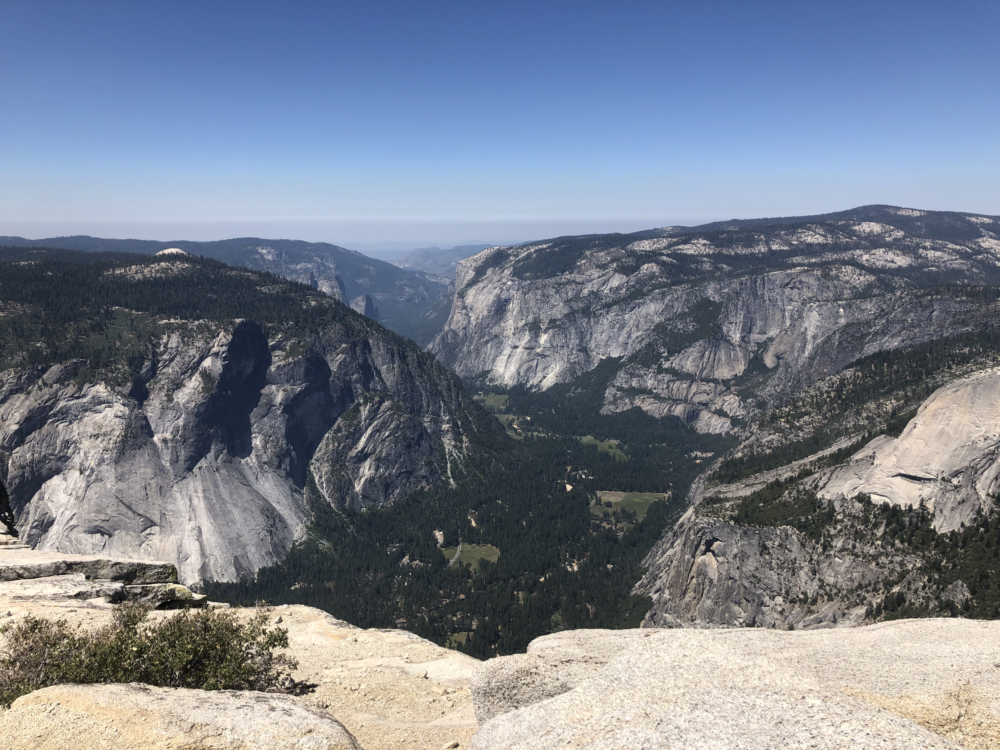

Trekking Through the Eastern Sierra
July 2020: Yosemite Valley to Mammoth Lakes
In July 2020, my husband and I hiked along the John Muir Trail (JMT) from Yosemite Valley to Mammoth Lakes, CA. I'll walk you through how we got our permits, how we prepared, and show you a highlight of our trip. Enjoy!
Getting Permits
Getting permits for any portion of the JMT is a challenge and requires patience while nagivating the loterry application process. Applications are processed exactly 24 weeks (168 days) in advance of your desired start date. We knew we wanted to hike no earlier than July 1st due to the possibility of a high snow year. So, we started the application process around mid-January. Before applying for a permit, you need to know:
- Desired hiking start date
- Desired starting trailhead
- First night camping location
- Group size
- Trip leader's contact information
- Hike end date
- Ending trailhead
While we would have loved to hike the entire JMT, we were only able to get 7 days off work. Prior to the Summer of 2020, we hadn't made our way up to Yosemite, so we knew we wanted to start at the northern end of the JMT in Yosemite Valley and make our way south to Mammoth, a total of 56 miles. Based off our previous hikes and training regimine, we knew we'd be able to successfully hike an average of 10 - 13 miles per day before mid-afternoon when thunderstorms tend to roll into the Eastern Sierra. Because we had a total of 7 days on the trail, we decided to take a small detour to Lake Ediza and summit Mt. Ritter while out in the backcountry.
On January 14, 2020, we started applying to the JMT rolling lottery application. Every day, we'd get an email indicating whether or not we had been granted a permit. After about two weeks of application denial emails, we finally got an acceptance email with all of our top trailehad/permit choices! Needless to say, we were excited!
Preparing for the Trip
We started preparing for our trip about two months prior to our start-date of July 17. I believe preparation falls into three main categories - gear, food, and training. I'll go into our preparation for each category below.
Gear
We started our preparation by making a list of and gathering our gear. I'll share our packing list below.
- Backpacking Pack (my favorite pack is here)
- Water Bladder (Platypus is my favorite brand)
- Water Filter (I use Gravity Works and love it)
- Trekking Poles
- Headlamp
- Trash Bag (unnecessary if you have a rain fly)
- Sleeping Bag
- Sleeping Pad
- Tent
- Jetboil
- Fuel
- Lighter
- Mug
- Spork
- Bowl (I use this Nalegene Tupperware - I love that it seals and has a lid!)
- Toiletries (towel, soap, toothpaste, toothbrush, contact solution, contact case)
- Trowel
- Medication (Ibuprofen, Allegra)
- Sun & Bug Protection (sunscreen, chapstick, bugspray)
- Hiking Clothes (hat, sunglasses, t-shirt, baselayer, shorts, socks, Buff)
- Camp Clothes (down jacket, baselayer, pants, socks, crocks, gloves, hat)
- Rain Jacket
- Solar Power Charging Bank
- Map
- In-Reach
- Phone & Phone Charger
- Kindle
- Bear Canister
- Food
Food
After making our packing list and gathering all of our gear, we started tackling our food prep. I had a target of 2600 - 3000 calories per day.
Breakfast
For breakfast each day, we made and packed homemade oatmeal. In a ziplock bag, we put 1/2 cup of quick-cook oats, 1 tablespoon of chia seeds, 1 tablespoon of powdered coconut milk, freeze-dried fruit, and 1 packet of RX nut butter. At the start of each morning, we'd boil two cups of water in the Jetboil. We added half the water and oatmeal to a Nalgene tupperware and add the other half of water to a mug for a warm cup of tea. I'd let the oatmeal cook/re-hydrate, take a few bites for some quick energy, save the rest of the oatmeal for later, and be on my way.
Snacks/Lunch
I never had a set lunch on the trail, just a smorgasbord of snacks. We tried to take a snack break every two hours to maintain energy on the trail. A list of my go-to snacks are below.
- Lara Bar
- RX Bar
- Corn Nuts (I swear, Corn Nuts are the BEST trail snack!)
- Trail Mix
- Fruit Leather
- Crackers
- Dried Fruit
- Cheese
- Snickers Bar (the second best trail snack out there!)
Dinner
We decided to keep it easy for dinner and use Backpacker's Pantry dehydrated meals. We did transfer each meal into a smaller bag to save space in our bear canister.
Before leaving for our trip, we smashed all of our food into our bear canisters to make sure everything fit. There are strict no-hanging rules in Yosemite, so we wanted to make sure everything fit, even on our first night in the backcountry.
Training
We're lucky - we live about an hour south of Mt. Whitney, have a three day weekend every other weekend, and have a camper van we can load into every weekend. So, training wasn't much of an issue for us. We hiked 1 to 2 hikes every weekend to train. Each hike was anywhere from 9 - 14 miles roundtrip per day with an elevation gain of 3000 - 4000ft per hike. Most of our hikes start at about 8000-9000 ft. We trained with daypacks on, but never trained with our fully weighted packs.
Every person is different, but from my personal experience, the most challenging aspect of a backpacking trip is the altitude. The more you can train at altitude, with a heavy pack or not, the better prepared you will be for a trip in the Eastern Sierra.
The Trip!
Day One - Yosemite Valley to Sunrise Creek
The day before our permits started, we drove to Mammoth and took a shuttle from Mammoth to Yosemite Valley. We spent the night in the Valley so that we could wake up bright and early on July 17 and get a head start to beat the intense summer sun. We woke up in the backpacker's campground at 5am. We quickly made our oatmeal, packed up camp, and started off on the trail.
We started our trek on the Mist Trail. We hiked past Vernal Falls then past Nevada Falls and past Little Yosemite Valley. Around mile 5, we passed the intersection of the JMT with the Half Dome trail. We had permits for Half Dome, but wanted to setup camp and drop our packs before starting the journey towards Half Dome. We hiked a little while longer to Sunrise Creek. We found a nice camp spot amongst the pines. We setup camp, hid our bear canisters and headed back in the opposite direction towards Half Dome. We felt so much lighter without 40-50lbs packs on!
We reached the Half Dome trailhead and continued the trek up towards Sub Dome, which is right below Half Dome. Once we reached the base of Sub Dome, we were greeted by a Park Ranger, who checked our permits and discussed some safety information with us before we proceeded onto Sub Dome.
The hike up Sub Dome was steep but manageable, especially with trekking poles. We finally made it to the base of Half Dome, where we dropped our trekking poles, put on gloves, and started up the cables. The cables were...intimidating. But thankfully not too crowded due to Covid. After what felt like forever on the steep terrain, we finally reached the top of the cables where the angle starts to mellow out. After a few more steps, we were at the top of Half Dome! The views were absolutely beautiful. We found our own little spot looking over the valley and stopped for a much needed and well deserved snack.
After an hour or so of exploring and relaxing at the top of Half Dome, we made our way back down the cables, which thankfully wasn't as intimidating as the way up. We reached the bottom of Half Dome, said goodbye, and started the trek back towards camp.
Day Two - Sunrise Creek to Upper Cathedral Lake
We woke up early the next day to continue on our trek. We learned quickly the first day that waking up early and beating the heat and afternoon thunderstorms was the best possible course of action. We continued along the trail and hiked past Moraine Dome. We hiked through some eerie meadows with burnt trees from the previous year's forest fires and could see Half Dome quickly disappearing behind us.

We continued on our hike through a beautiful meadow with an unfortunately dried out creek from the low snow year. We passed Sunrise High Sierra Camp, which is usually bustling with people, but was abandoned due to Covid restrictions. We stopped for lunch about a mile or so past Sunrise Camp before continuing our trek to Upper Cathedral Lakes.
The second half of the second day was tough for me. I was hurting and it was hot. After what felt like a very long hike, we finally made it to upper Cathedral Lake. After setting up camp, we had enough time to soak in some sun and swim in the freezing alpine lake before cleaning up and cooking dinner. We thankfully narrowly escaped a thunderstorm that evening and were able to watch a beautiful sunset from the lake before heading to bed.

Day Three - Upper Cathedral Lake to Lyell Fork
We woke up early, packed up camp, and said goodbye to beautiful Upper Cathedral Lake. We continued on the trail and hiked through wooded forest, which felt nice and cool in the mellow morning sun. Day three was our longest day, totaling at about 16 miles. We hiked through Tuolumne Meadows, which was beautiful, but felt a bit monotonous after a while.

After hiking the morning through Tuolumne Meadows, we got to the base of Lyell Canyon, where we stopped for a late lunch and mini fishing break before making a final push up the canyon to Lyell Headwaters. Unfortunately during our lunch hour, some ominous looking clouds rolled in. We decided to continue on, hoping to beat the thunderstorm and setup camp before it hit. Unfortunately, we weren't quick enough. About 3/4 of our way up through the canyon, a thunderstorm hit. We quickly put on our rain jackets and tried to shelter under a tree to stay as dry as possible in the mean time. We waited out the heaviest rain for about 30 or so minutes, then continued on in a drizzle through the rest of the canyon.

After what felt like a long time of hiking through the rain, we finally made it to Lyell Fork, which was absolutely beautiful. We setup camp, got into some dry clothes, and cooked a much needed warm, filling dinner.
Day Four - Lyell Fork to Thousand Island Lake
We woke up early, packed up camp, and started the beautiful hike up to Donahue Pass, the official exit of Yosemite National Park and the official entrance of the Ansel Adams Wilderness.
We made it up to Donahue Pass, then started the decent down into a beautiful meadow. I think day four was the most beautiful day of the whole journey. We stopped for lunch in the meadow and watched marmots warn each other about a lurking coyote running around the meadow. After lunch, we continued on to Island Pass, our last climb prior to reaching our final destination of the day.

We got to Thousand Island Lake a little before noon and setup camp. Right when we got our tent setup and everything safetly placed inside, a thunderstorm rolled in and started pouring. We quickly climbed into the tent and unfortunately spent several hours in our tent waiting for the thunderstorm to pass. The skies cleared around 5pm, and we had a few hours left of daylight to walk around the lake, fish, eat dinner, and watch the sunset.
Day Five - Thousand Island Lake to Lake Ediza
We woke up early and hit the trail, excited to head to Lake Ediza, where we'd be setting up camp and spending the night for two full nights - the longest we had spenet at any one location on the trip so far. The hike from Thousand Island Lake to Lake Ediza was beautiful, but rather uneventful. By this point in the trip, we had settled into a rhythm and felt strong and confident on the trail. We reached Lake Ediza around noon, setup camp, and ate a much needed lunch. We spent the rest of the day soaking in some sun and fishing and reading by the stream.

Day Six - Summit Mt. Ritter
Day six was definitely the most challenging day of the trip, both menetally and physically. We woke up early, scarffed down some oatmeal and started the trek up to the summit of Mt. Ritter. Mt. Ritter sits at 13,149 feet and is one of the more propinent peaks in the Eastern Sierra. The trek up to the summit was a short 5 miles, but almost 4000ft elevation gain. We hiked through a beautiful meadow at the base of Mt. Ritter right as the sun started hitting the mountains.

We continued through the meadow and hit the base of the mountain, which is where the rock scrambling began. There was no set trail up to the summit, so it was up to us to navigate and find the best path. We rock scrambled for at least a thousand or so feet before reaching a big snow field.

We continued up the snow field for a few hundred feet until we hit rock again. We scrambled up the mountain, amongst both rock and snow until reaching the summit. While physically demanding and mentally challenging, the views at the summit were well worth it.
After a well deserved lunch break at the summit, we carefully started our trek down the moutanin, savoring the views and thankful that the skies remained clear without a threat of thunderstorms for the first day on our entire trip. While day six was our shortest day by milage, it was one of our longer days by the hour. By the time we got back to camp, we cleaned off, ate dinner, and went to bed.
Day Seven - Lake Ediza to Reds Meadow
We woke up early and packed up camp for the very last time. We started the trek out to Reds Meadow, where we'd end our trip. The hike was relatively uneventful and not as beautiful as what we had seen the past few days. We hiked quickly and made it to the trailhead by noon - just in time for lunch in town! Eating a burger and drinking a beer had never felt quite so good! Saying goodbye to the trail was hard, and I wish we were able to hike the entire JMT instead of just one third. I know we'll be back to hike the whole trail in the future.